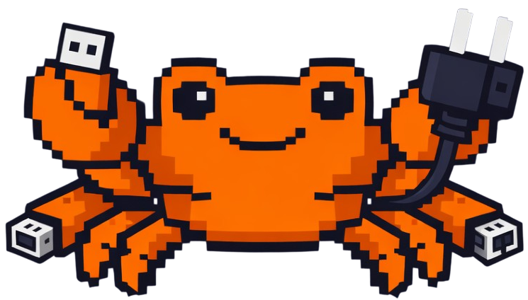

The entire power of Claude Code — reading files, editing code, running commands, browsing the web — available as a simple Node.js API. No terminal. No copy-paste. Just import and go.
import { Claude, EVENT_TEXT } from '@scottwalker/claude-connector' const claude = new Claude({ model: 'sonnet' }) await claude.init() // Ask anything, get answers instantly const result = await claude.query('Find and fix all bugs in auth.ts') console.log(result.text) // Or stream the response in real time await claude.stream('Find bugs') .on(EVENT_TEXT, t => process.stdout.write(t)) .done()
Everything Claude Code can do — now from your code.
# Run Claude, copy output, parse it, # somehow feed it into your pipeline... $ claude -p "find bugs" --output-format json \ | jq '.result' \ | your-script.sh # No sessions. No streaming. No types. # Good luck with error handling.
import { Claude, EVENT_TEXT } from '@scottwalker/claude-connector' const claude = new Claude() await claude.init() // Stream with fluent callbacks await claude.stream('Find bugs') .on(EVENT_TEXT, t => process.stdout.write(t)) .done() // Multi-turn sessions with memory const session = claude.session() const bugs = await session.query('Find bugs') const fixes = await session.query('Fix them')
Schedule Claude to run on intervals — like cron, but with AI. Monitor, review, report — hands-free.
import { SCHED_RESULT, SCHED_ERROR } from '@scottwalker/claude-connector' // Check CI pipeline every 5 minutes const job = claude.loop('5m', 'Check CI status and report failures') job.on(SCHED_RESULT, (result) => { console.log(`[${new Date().toISOString()}]`, result.text) }) job.on(SCHED_ERROR, (err) => { console.error('Check failed:', err.message) }) // Stop when done job.stop()
import { PERMISSION_PLAN } from '@scottwalker/claude-connector' // Periodic code review every 2 hours const reviewer = claude.loop('2h', 'Review recent commits for bugs and security issues', { permissionMode: PERMISSION_PLAN, // read-only, safe }) // Supported intervals: '30s', '5m', '2h', '1d', or raw ms
Watch Claude think word-by-word. React to tool calls, errors, and results as they happen.
import { Claude, EVENT_TEXT, EVENT_TOOL_USE, EVENT_RESULT } from '@scottwalker/claude-connector' // Fluent API — register callbacks, await completion const result = await claude.stream('Refactor the auth module') .on(EVENT_TEXT, t => process.stdout.write(t)) .on(EVENT_TOOL_USE, e => console.log(`[tool: ${e.toolName}]`)) .done() console.log(`Done in ${result.durationMs}ms`) // Or collect all text at once const text = await claude.stream('Summarize').text() // Or pipe to stdout await claude.stream('Explain').pipe(process.stdout)
import { Claude, EVENT_TEXT, EVENT_TOOL_USE, EVENT_RESULT } from '@scottwalker/claude-connector' // for-await works too — full control over each event for await (const event of claude.stream('Analyze this project')) { switch (event.type) { case EVENT_TEXT: process.stdout.write(event.text) break case EVENT_TOOL_USE: console.log(`[tool: ${event.toolName}]`) break case EVENT_RESULT: console.log(`Tokens: ${event.usage.inputTokens}in / ${event.usage.outputTokens}out`) break } }
StreamHandle converts to a Node.js Readable. Pipe to files, compress with gzip, stream to HTTP responses — the full Node.js ecosystem just works.
import { createWriteStream } from 'node:fs' import { pipeline } from 'node:stream/promises' import { createGzip } from 'node:zlib' // Pipe to file claude.stream('Generate a report').toReadable() .pipe(createWriteStream('report.txt')) // Pipeline with gzip compression await pipeline( claude.stream('Generate docs').toReadable(), createGzip(), createWriteStream('docs.txt.gz'), )
import express from 'express' // Stream Claude's response directly to HTTP client app.get('/ai/stream', (req, res) => { res.writeHead(200, { 'Content-Type': 'text/plain' }) claude.stream(req.query.prompt).toReadable().pipe(res) })
// Collect all text — one liner const text = await claude.stream('Summarize README.md').text() // Pipe to stdout, get result metadata back const result = await claude.stream('Explain the auth flow').pipe(process.stdout) console.log(`\nCost: $${result.cost}`)
One persistent process, unlimited turns. Send prompts, get responses — real-time conversation over a single CLI connection.
import { Claude, EVENT_TEXT } from '@scottwalker/claude-connector' const chat = claude.chat() .on(EVENT_TEXT, t => process.stdout.write(t)) const r1 = await chat.send('What files are in src/?') console.log(`\n[${r1.durationMs}ms]`) const r2 = await chat.send('Refactor the largest file') console.log(`\n[${r2.durationMs}ms]`) chat.end() // graceful close
import { pipeline } from 'node:stream/promises' import { createReadStream, createWriteStream } from 'node:fs' // Full Node.js Duplex — write prompts in, read text out const duplex = claude.chat().toDuplex() await pipeline( createReadStream('prompts.txt'), // one prompt per line duplex, createWriteStream('responses.txt'), )
import { WebSocketServer } from 'ws' import { Claude, EVENT_TEXT, EVENT_RESULT } from '@scottwalker/claude-connector' wss.on('connection', (ws) => { const chat = claude.chat() .on(EVENT_TEXT, t => ws.send(JSON.stringify({ type: 'text', t }))) .on(EVENT_RESULT, r => ws.send(JSON.stringify({ type: 'done', usage: r.usage }))) ws.on('message', async (data) => { await chat.send(JSON.parse(data).prompt) }) ws.on('close', () => chat.end()) })
Extend Claude with external tools via Model Context Protocol — databases, browsers, APIs, and more.
// Define MCP servers inline const claude = new Claude({ mcpServers: { playwright: { command: 'npx', args: ['@playwright/mcp@latest'], }, database: { type: 'http', url: 'http://localhost:3001/mcp', }, github: { command: 'npx', args: ['@modelcontextprotocol/server-github'], env: { GITHUB_TOKEN: process.env.GITHUB_TOKEN }, }, }, })
// Or load from a config file const claude = new Claude({ mcpConfig: './mcp.json', }) // Now Claude can browse the web, query your DB, // create GitHub issues — all from your code const result = await claude.query('Open the login page and test the auth flow')
Allow or deny specific tools. Use glob patterns for fine-grained control over Bash commands.
import { Claude, PERMISSION_PLAN } from '@scottwalker/claude-connector' // Only allow reading and searching — no edits, no bash const claude = new Claude({ allowedTools: ['Read', 'Glob', 'Grep'], permissionMode: PERMISSION_PLAN, })
// Allow Bash but only for specific commands const claude = new Claude({ allowedTools: [ 'Read', 'Edit', 'Write', 'Bash(npm run *)', // only npm scripts 'Bash(git status)', // only git status 'Bash(npx prettier *)', // only prettier ], })
import { Claude, PERMISSION_ACCEPT_EDITS } from '@scottwalker/claude-connector' // Allow everything except web access and file deletion const claude = new Claude({ disallowedTools: ['WebFetch', 'WebSearch'], permissionMode: PERMISSION_ACCEPT_EDITS, })
Run risky refactors in an isolated copy of the repo. Your working tree stays untouched.
// Run in an isolated worktree — auto-generated branch name const result = await claude.query('Refactor the entire auth module', { worktree: true, }) // Or specify a branch name const result2 = await claude.query('Migrate from Express to Fastify', { worktree: 'migration/fastify', })
// Run multiple experiments in parallel — each in its own worktree const [approach1, approach2] = await claude.parallel([ { prompt: 'Rewrite auth using JWT tokens', options: { worktree: 'experiment/jwt' }, }, { prompt: 'Rewrite auth using session cookies', options: { worktree: 'experiment/sessions' }, }, ]) // Compare results, pick the best approach, merge it
Pass images, logs, configs, or any data alongside your prompt — just like piping in the terminal.
import { readFileSync } from 'node:fs' // Attach an image for analysis const screenshot = readFileSync('./bug-screenshot.png', 'base64') const result = await claude.query('What bug do you see in this screenshot?', { input: screenshot, })
// Attach error logs const logs = readFileSync('./error.log', 'utf-8') const result = await claude.query('Analyze these errors and suggest fixes', { input: logs, })
// Attach any document — configs, CSVs, JSON, etc. const config = readFileSync('./docker-compose.yml', 'utf-8') const result = await claude.query('Review this config for security issues', { input: config, })
Install the package, import it, and go. Works with your existing Claude Code subscription.
# Install from npm $ npm install @scottwalker/claude-connector # or with other package managers $ yarn add @scottwalker/claude-connector $ pnpm add @scottwalker/claude-connector
import { Claude, EVENT_TEXT } from '@scottwalker/claude-connector' const claude = new Claude({ model: 'sonnet' }) await claude.init() // That's it. Ask anything. const result = await claude.query('What does this project do?') console.log(result.text) // Or stream it live await claude.stream('Explain the architecture') .on(EVENT_TEXT, t => process.stdout.write(t)) .done()